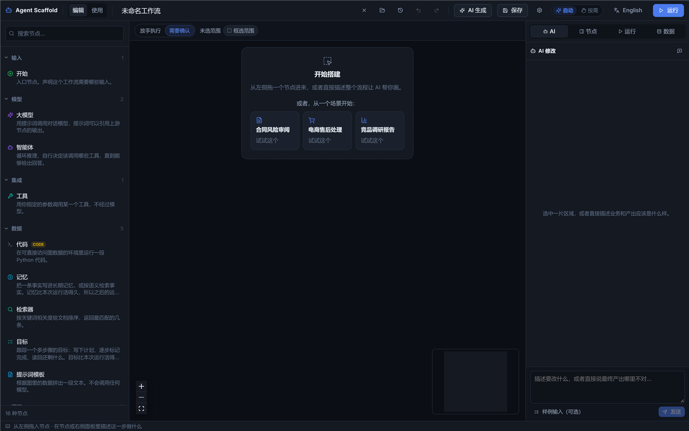
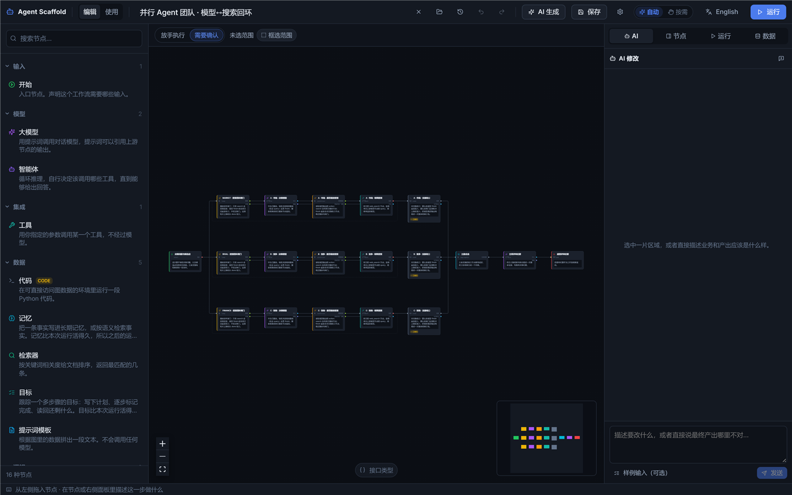
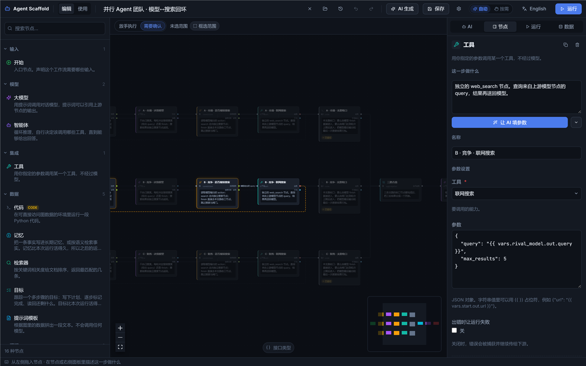
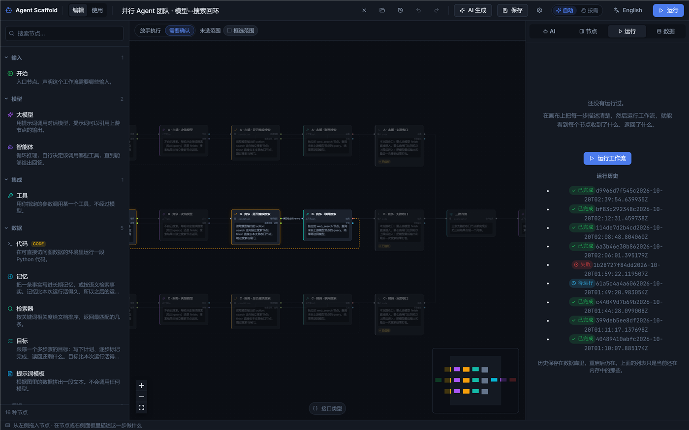
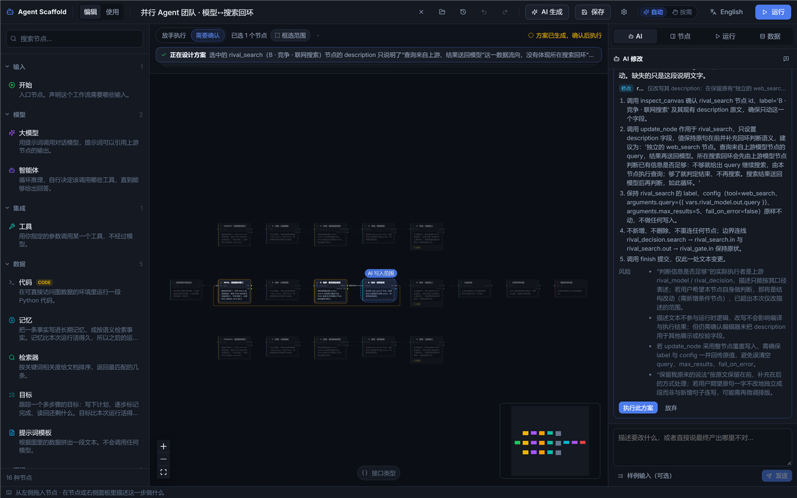

在画布上搭 AI Agent 工作流，编译成可执行图。
并发、预算、故障隔离、记忆、调度，各自独立成层。

把「编排、重试、预算、记忆、并发」从节点代码里拆出来
节点图是可编译的资产：一次编译、多次运行，版本可锁定。
图哈希 + runtime / 镜像 digest / 子图版本锁定，同一张图跑出同样结果。
并发、超时、重试、预算都是执行器策略，不污染业务逻辑。
单节点超时、失败、熔断不拖垮整张图。
每次 run 都有事件流、日志、用量与最终结果。
用自然语言生成、修改、解释工作流图。
画布 · 检查器 · 运行历史 · Copilot




后端 FastAPI，前端 React + Vite
# 后端
cd backend
python -m venv .venv && pip install -r requirements.txt
cp .env.example .env # 填 LLM_BASE_URL / LLM_API_KEY
uvicorn app.main:app --reload --port 8000
# 前端
cd frontend
npm install && npm run dev # http://localhost:5173